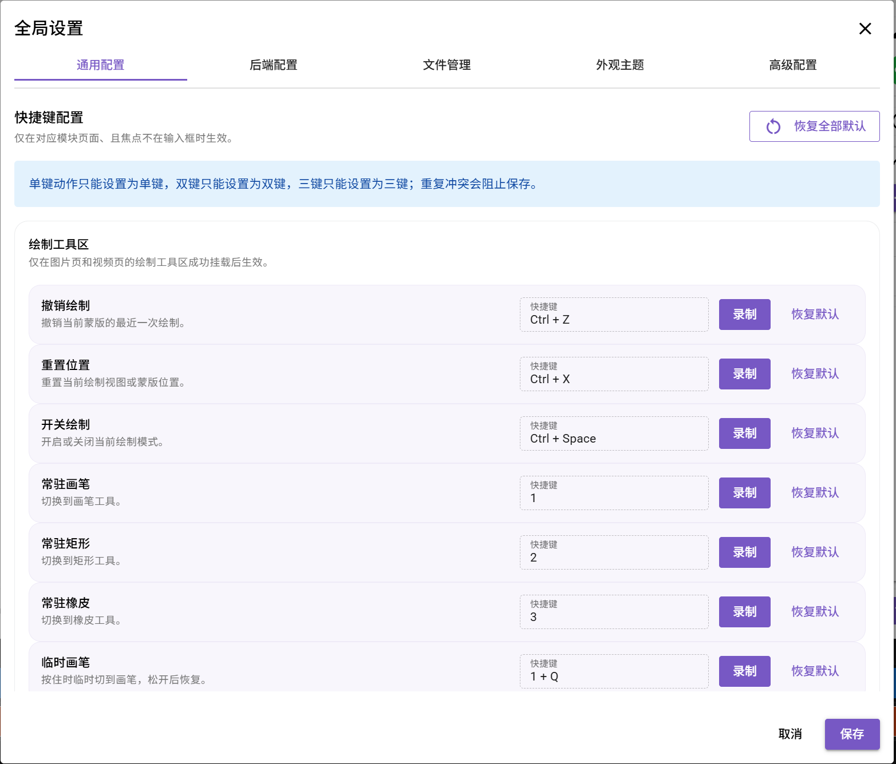
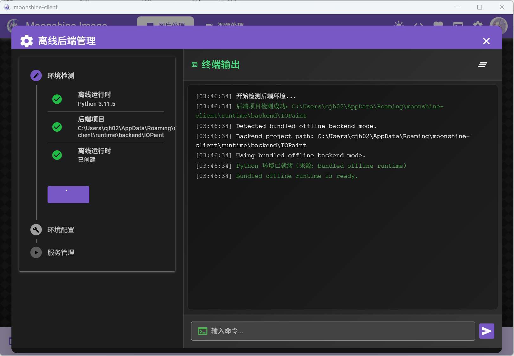
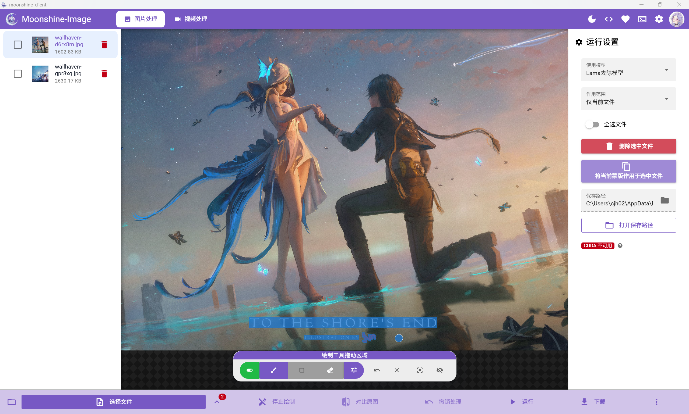
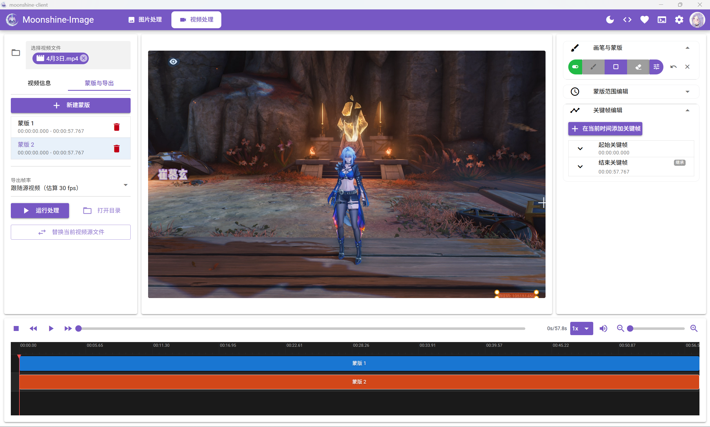

入口 A
安装包
- 下载 Windows x64 安装包并运行安装程序。
- 选择安装位置，完成安装后从开始菜单或桌面启动。
- 首次启动进入环境检查和模型准备。
使用说明 / 从开始到结果
Moonshine-Image 把图片和视频的处理工具放在同一个工作逻辑里：先准备处理源，再做出蒙版，调用适合的模型，检查结果并导出一份新文件。
01
首发平台是 Windows x64。你可以选择安装包，也可以使用免安装包；两条入口在首次启动时都会检查同一套本地运行环境。
入口 A
入口 B


02
“图片”和“视频”使用不同的编辑器和时间轴，但处理本质一致。每一步都可以重复、跳过或回到前面修改。
智能选区和手动绘制蒙版可以二选一。
OCR、SAM、手绘和擦除可以叠加到同一张最终蒙版。
在预览、写回、编辑、擦除、撤销 / 重做和确认之间来回调整。
03

点击顶部“选择文件”导入当前图片，也可以选中多张图片或一个文件夹。拖放文件到工作区同样会触发导入。
在“蒙版模式”选择手动绘制或智能选区。可使用笔刷、矩形、橡皮擦，也可从“OCR 文本智能选区”、SAM 点选 / 框选或“文本智选”开始。
打开“候选蒙版”勾选结果，再用“撤回”“重做”“清空智能选区结果”继续调整；确认覆盖范围后再运行模型。
在设置面板选择可用模型和作用范围，点击“运行模型”；用“对比原图”检查效果，最后点击“下载”导出。
手动蒙版只决定“哪里需要处理”，不会在绘制时直接修改原图。选择图片后，在图片处理工具栏的“蒙版模式”中切换到“手动”，画布上会出现可拖动的绘制工具栏。
点击图片处理工具栏中的“手动”。按钮高亮后，绘制工具栏会浮在图片上方；如果工具栏中的绘制开关是红色关闭状态，再点击一次将它开启。
按目标形状选择“绘制”“矩形”或“擦除”。当前模式按钮会高亮，但三种模式始终编辑同一张蒙版。
在“画笔设置”里调整颜色、大小和透明度；用撤回、重做、清空、重置视图或“按住隐藏蒙版”检查边缘。
确认蒙版覆盖目标后点击“运行”。如需再修正，可以返回手动模式继续画，也可以切到智能选区叠加候选。
停止蒙版编辑，让鼠标用于查看画面；它不等于“清空”，已有蒙版仍可在重新进入编辑模式后继续使用。
显示画笔工具栏。只有绘制开关开启时，拖动鼠标才会写入或擦除蒙版。
显示 OCR / SAM 工具栏，画布改为点选、框选、文本智选或智能结果擦除交互；可用动作由当前模型决定。
鼠标显示圆形笔刷范围。按住并拖动会连续增加蒙版，适合不规则边缘和局部补画。
常驻快捷键：1鼠标变为十字定位线。按住一个角并拖到对角，松开后一次添加矩形蒙版。
常驻快捷键：2拖动会从现有蒙版中减去区域，只修改蒙版，不会擦掉源图片像素。
常驻快捷键：3绿色为开启、红色为关闭。关闭后保留当前工具和蒙版，但画布不再接收绘制动作，便于查看或移动视图。
快捷键：Ctrl + Space| 快捷键 | 作用 | 使用方式 |
|---|---|---|
| Ctrl + Z | 撤销绘制 | 撤销当前蒙版最近一次绘制动作。 |
| Ctrl + X | 重置视图 | 恢复当前绘制视图的默认缩放与位置，不会清空蒙版。 |
| Ctrl + Space | 开关绘制 | 在开启和关闭绘制之间切换。 |
| 1 / 2 / 3 | 常驻工具 | 依次切换到画笔、矩形、橡皮，切换后保持该模式。 |
| Ctrl + - | 减小画笔 / 橡皮 | 减小当前画笔或橡皮的尺寸。 |
| Ctrl + + | 增大画笔 / 橡皮 | 增大当前画笔或橡皮的尺寸。 |
| 1 + Q | 临时画笔 | 按住时临时使用画笔，松开后恢复原来的模式。 |
| 2 + Q | 临时矩形 | 按住时临时使用矩形，松开后恢复原来的模式。 |
| 3 + E | 临时橡皮 | 按住时临时使用橡皮，松开后恢复原来的模式。 |
| Ctrl + Alt + Z | 撤销图片处理 | 撤销当前图片最近一次模型处理结果，不等同于撤销一笔蒙版。 |
| Ctrl + Alt + X | 按住对比原图 | 按住显示原图，松开恢复处理结果。 |
| Ctrl + A | 全选图片 | 全选当前图片列表中的图片。 |
| ArrowUp | 上一张图片 | 切换到图片列表中的上一张图片。 |
| ArrowDown | 下一张图片 | 切换到图片列表中的下一张图片。 |
智能选区不会强迫你接受单一结果。OCR、点选、框选和文本智选会产生一项或多项候选；你可以先预览、组合和修整，再让当前启用的区域参与模型处理。
没有图片、后端未就绪或未安装兼容模型时，相应按钮会禁用，并显示缺少的条件。候选按钮显示“暂无候选蒙版”。
SAM 会提示单击点选、拖拽框选或输入文本；OCR 可直接检索当前图片或已选图片。模型不支持的动作不会作为可用操作出现。
按钮进入加载状态，批量检索会显示进度与逐项结果。计算期间部分操作暂时锁定；可见“取消”按钮时可以终止当前任务。
状态区显示候选数量。列表中每项带名称、置信分数和启用状态，部分来源还会附带生成时间或来源；每项都可以预览、调整样式或删除。
分析失败时会显示错误提示，不会用失败结果覆盖已有候选；取消操作会结束本次请求，未完成的结果不会写回。修正条件后可以重新检索。
勾选的候选会叠加到当前可见蒙版；多个候选可以同时启用。取消勾选只会暂时停用并从合成结果中排除，候选仍留在列表中；点击删除才会移除该项。
把鼠标移到候选项上，会在画布中预览对应区域。颜色和透明度用于区分重叠候选；使用 LaMa 且候选类型支持时，还可以调整扩边像素以覆盖目标边缘。
默认候选阈值为 0.60，自动选中阈值为 0.80。置信度严格高于候选阈值才会进入候选列表；其中严格高于自动选中阈值的结果会预先启用，介于两者之间的结果保留给你勾选。等于阈值时不会触发对应动作。开启“使用 SAM 增强文本蒙版”后，兼容的 SAM 模型会进一步贴合文字轮廓。
运行模型时，画布上当前启用并合成的蒙版区域才参与处理。你也可以切回手动模式继续补画或擦除，不必在手绘和智能选区之间二选一。
04

全屏把预览画面扩展到整个窗口，编辑工具作为浮层覆盖在画面上，不会烘焙进视频。下图是两种状态的对比示意；实际使用时会根据当前选中的轨道只显示“普通蒙版”或“智能选区”其中一套。
视频不是给一张静态蒙版套上整段素材。每一条蒙版轨道都回答两个问题：它覆盖视频的哪一段，以及在当前帧上覆盖哪里。普通蒙版与智能选区蒙版只是两种不同的蒙版来源，最终会进入同一套视频处理流程。
| 对比项 | 普通蒙版 | 智能选区蒙版 |
|---|---|---|
| 怎样创建 | 在蒙版列表中新建蒙版并选中轨道，再用画笔、矩形、橡皮绘制基础区域，也可使用已有蒙版素材。 | 点击智能选区入口，新建一条空的 SAM 智能选区轨道；在预览帧上单击点选、拖拽框选，或在兼容模型中输入文本目标。 |
| 怎样覆盖时间 | 设置开始时间和结束时间；只有轨道活动区间内的帧使用该蒙版。 | 运行智能选区后，把目标从提示帧向视频前后传播。轨道默认覆盖完整视频，范围不使用普通蒙版的时间编辑方式。 |
| 怎样随画面变化 | 在需要的位置添加关键帧，调整蒙版的位置、缩放或形状；相邻关键帧之间由时间轴呈现连续变化。 | 模型为每个传播到的帧生成目标蒙版。它不是普通关键帧轨道，不能用同一套范围和关键帧字段直接编辑。 |
| 怎样修正 | 直接在对应时间点补画、擦除或调整关键帧；撤销仅针对当前选中轨道的最近绘制。 | 候选对象可逐项启用、隐藏、扩边或删除，也可清空后重新点选 / 框选并传播；局部缺口可另用普通蒙版轨道补充。 |
| 适合场景 | 固定区域、短区间、轮廓变化可控，或需要逐帧精细修正的目标。 | 目标会移动、变形或跨越较长时间，希望模型自动跟随的场景。 |
没有可编辑轨道时，全屏工具按钮会提示“请先新建蒙版”。创建后在左侧列表选中它，右侧会出现“画笔与蒙版”“蒙版范围编辑”和“关键帧编辑”。
在预览画面开启绘制，选择画笔、矩形或橡皮。基础蒙版定义要处理的区域，设置开始 / 结束时间定义它在哪一段生效。
把播放头移到目标发生变化的位置，点击“在当前时间添加关键帧”，再调整位置、缩放或形状。需要时重复添加，而不是假设整段画面完全相同。
在蒙版列表点击智能选区入口。应用先创建并选中一条空轨道，此时还没有任何候选对象或逐帧蒙版。
把播放头停在目标清晰的一帧。单击目标进行点选，拖拽包围目标进行框选；若当前模型支持，也可用文本智选描述目标。
点击“运行智能选区”。应用会从提示帧向前后传播并显示进度，完成后把逐帧结果写入当前智能轨道。
“候选蒙版列表”中每个对象会标明已启用 / 已隐藏以及点选或框选来源。可以逐项开关、为 LaMa 调整扩边、删除，或清空整条轨道后重新传播。
05
| 模型 / 能力 | 适合处理 | 使用前提与边界 |
|---|---|---|
| LaMa | 通用图像擦除 | 基础模型；在 MAT 不可用时可作为回退。 |
| MAT | 蒙版修复 | 需要 CUDA；受 CC BY-NC 4.0 非商业许可限制。CPU 不可用时会提示并回退 LaMa。 |
| SLBR | 可见半透明水印，图片或视频轨道 | 可按整张画面或指定区域处理；如果水印完全遮挡了细节，模型不能保证还原真实内容。 |
| SAM1 / SAM2.1 / SAM3 | 点、框、文本提示和视频传播 | 不同模型支持的操作不同，应用会只显示当前模型可用的按钮和提示。 |
06
Moonshine-Image 默认把结果写到输入文件旁的 Moonshine-Output 目录，并创建新文件。原始文件不会被覆盖。
如果输出目录或模型状态异常，先处理应用提示，再重新运行对应任务；不要把未完成的临时文件当作最终结果。